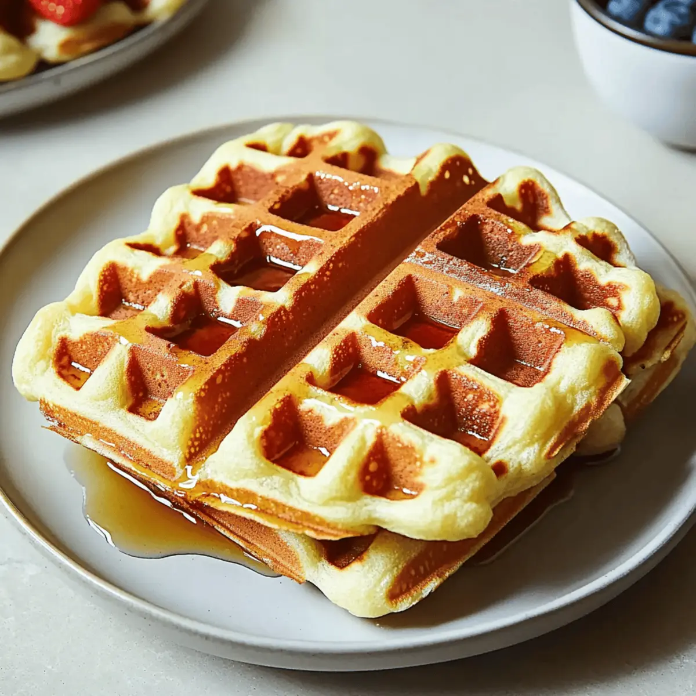

Crispy on the outside and soft on the inside,
these classic waffles are a timeless breakfast
favorite. Made with simple ingredients, they’re
perfect served warm with butter, syrup, or your
favorite toppings for a comforting and delicious
start to the day.